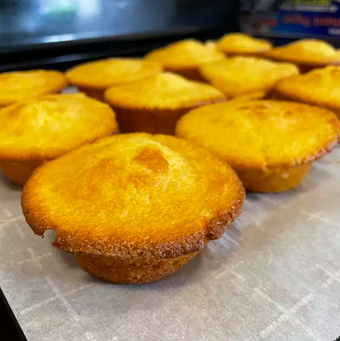

Sweet Cornbread Recipe

Description
If you enjoy sweet cornbread, I think you'll like these a lot! Source: Allrecipes.com
Ingredients
2 (7.5 ounce) packages corn bread mix (such as Jiffy®)
1/2 cup milk
1/2 cup sour cream
3 tablespoons honey
2 eggs
2 tablespoons white sugar
3 tablespoons melted butter
Steps
- Preheat oven to 375 degrees F (190 degrees C). Line 12 muffin cups with paper liners.
- Mix corn bread mix, milk, sour cream, honey, and eggs in a bowl until batter is well combined yet slightly lumpy; allow to rest for 5 minutes. Fill muffin cups 3/4 full with batter. Lightly sprinkle each muffin with sugar.
- Bake in the preheated oven until muffins are golden brown, 18 to 20 minutes. Brush tops of muffins with melted butter; repeat brushing muffins with butter 2 to 3 more times.